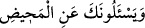

__WORD__“sana âdet görmeden soruyorlar” (el-Bakara, 2/222) âyetinde ve benzeri diğer
âyetlerde olduğu gibi Hz. Peygamber’e onlara cevap vermesi emredilmiştir.”
et-Te’vîlâtü’n-Necmiyye’de şöyle der: “Eğer sana kıyamet gününde dağların
durumunun ne olacağını sorarlarsa, “De ki: “Rabbim onları ufalayıp savuracak.” Tûr
dağını paramparça ettiği gibi Rabb’im onları, kahhâriyyet sıfatının tecellisi ile yerinden
söküp atar.
106. Böylece yerlerini dümdüz, bomboş bırakacaktır.
“Böylece yerlerini dümdüz,” sanki bütün cüzleri her yönden bir safta dizilmiş gibi bir
seviyede “bomboş bırakacaktır.”
107. Orada ne bir iniş, ne de bir yokuş görebileceksin.
“Orada,” yani yerlerinden sökülüp atılan dağların yerinde ne çıplak gözle; ne de
basîret ile sanki gizli mânâlar kabîlindenmiş gibi çok kapalı olduğu için “ne bir iniş”
görebileceksin...
Bu cümle, önceki âyetteki “dümdüz, bomboş” olmanın nasıl olacağını açıklamak
üzere getirilmiş bir başlangıç cümlesidir. Buradaki hitap, bu keyfiyeti görecek olan
herkes içindir.
“__WORD__ mânâ ile ilgili şeylere hastır. el-Müfredât’ta der ki: “__WORD__ dikilmiş bir tahta
gibi gözle görülen şeyler hakkında kullanılır. “__WORD__ ise düzlenmiş bir yerde olduğu
gibi, din ve geçim konusunda düşünce ve basîret ile idrâk edilen şeyler hakkında
kullanılır.
“Ne de bir yokuş” yâni azıcık bir yükseklik “görebileceksin.” Zemahşerî: “__WORD__
çok az yükseklik demektir.” der. el-Kâmûs’ta “el-Emt, yüksek mekân, küçük tepeler,
enginlik ve yükseklik demektir.” der. el-Münâsebât’ta şöyle denir: “__WORD__ yâni
yükseklik ve alçaklık gibi bir farklılık göremezsin.” demektir.” Celâleyn’de ise “__WORD__” enginlik ve yükseklik demektir.” denilmiştir. Buna benzer bir ifade Farsça
tefsirde şöyle zikredilmiştir: “__WORD__ ne yüksek ne alçak demektir.”